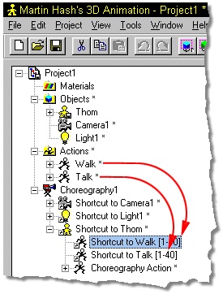

Figures often have to do more than one thing at a time, such as “walking” and
talking”. One Action is said to be overloaded on the other.
Figures often have to do more than one thing at a time, such as “walking” and
talking”. One Action is said to be overloaded on the other.
To use overloaded actions, simply drag and drop existing actions onto the characters shortcut in the Project Window.

Different types of actions can be dropped on one another and will occur at the same time. If two actions contain the same type of motion on the same parts of the model, the one added last will take precedent.
Other Advanced Action Topics:
Move Frames
Action Properties
Flatten Object